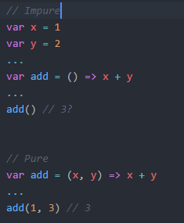

- ¿ Que es JavaScript ? -

JavaScript es un lenguaje de programación, o lo que es lo mismo, un mecanismo con el que podemos decirle a nuestro navegador
que tareas debe realizar, en que orden y cuantas veces (por ejemplo).
Muchas de las tareas que realizamos con HTML y CSS se podrían realizar con JavaScript. De hecho, es muy probable que al principio
nos parezca que es mucho más complicado hacerlo con JavaScript, y que por lo tanto no merece la pena.
Sin embargo, con el tiempo veremos que JavaScript nos ofrece una mayor flexibilidad y un abanico de posibilidades más grande, y que
bien usadas, pueden ahorrarnos bastante tiempo.
- Aprender JavaScript -
Aunque JavaScript es ideal para muchos casos, es mucho más complicado aprender JavaScript (o un lenguaje de programación en general)
que aprender HTML o CSS, los cuales son mucho más sencillos de comprender. Antes debemos conocer varias cosas:
-
Para aprender JavaScript debemos conocer el lenguaje JavaScript, pero no podremos hacerlo si no sabemos programar.
Se puede aprender a programar con JavaScript, pero es recomendable tener una serie de fundamentos básicos de programación
antes para que no nos resulte muy duro.
-
Para aprender a programar antes debemos saber como «trabaja un ordenador». Programar no es más que decirle a una máquina
que cosas debe hacer y como debe hacerlas. Eso significa que no podemos pasar por alto nada.
-
Para darle órdenes a una máquina debemos tener claro que esas órdenes son correctas y harán lo que se supone que deben hacer.
Si le indicamos a una máquina los pasos para resolver un problema, pero dichos pasos son erróneos, la máquina también hará mal el trabajo.
Dicho esto, es necesario tener presente que aprender a programar es una tarea que no ocurre de un día para otro. Requiere tiempo, esfuerzo,
acostumbrarse a cambiar la forma de pensar y practicar mucho.
-
Puedes copiar un programa en segundos, pero eso no significa que lo entiendas.
-
Puedes comprender un programa en minutos, pero eso no significa que lo puedas crear.
-
Puedes crear un programa en horas, pero eso no significa que sepas programar.
-
Puedes aprender a programar en semanas, pero eso no significa que no cometas errores.
-
Puedes aprender a programar bien y sin demasiados errores en meses.
Pero dominar la programación es una tarea que requiere años.
- La consola JavaScript -
Para acceder a la consola JavaScript del navegador, podemos pulsar CTRL+SHIFT+I sobre la pestaña de la página
web en cuestión, lo que nos llevará al Inspector de elementos del navegador. Este inspector es un panel de control
general donde podemos ver varios aspectos de la página en la que nos encontramos: su etiquetado HTML, sus estilos CSS, etc...
Concretamente, a nosotros nos interesa una sección particular del inspector de elementos. Para ello, nos moveremos a la
pestaña Console y ya nos encontraremos en la consola JavaScript de la página.
En esta consola, podemos escribir funciones o sentencias de JavaScript que estarán actuando en la página que se encuentra en la pestaña
actual del navegador. De esta forma podremos observar los resultados que nos devuelve en la consola al realizar diferentes acciones.
Para ello, vamos a ver algunas bases:
El clásico primer ejemplo cuando se comienza a programar, es crear un programa que muestre por pantalla un texto, generalmente el texto
«Hola Mundo». También podemos realizar, por ejemplo, operaciones numéricas. En la consola JavaScript podemos hacer esto de forma muy sencilla:
console.log("Hola Mundo");
console.log(2 + 2);
En la primera línea, veremos que al pulsar enter nos muestra el texto «Hola Mundo». En la segunda línea, sin embargo, procesa la operación
y nos devuelve 4. Para mostrar estos textos en la consola JavaScript hemos utilizado la función console.log, pero existen varias más:

| Función |
Descripción |
| console.log() |
Muestra la información proporcionada en la consola JavaScript. |
| console.info() |
Equivalente al anterior. Se utiliza para mensajes de información. |
| console.warn() |
Muestra información de advertencia. Aparece en amarillo. |
| console.error() |
Muestra información de error. Aparece en rojo. |
| console.clear() |
Limpia la consola. Equivalente a pulsar CTRL+L o escribir clear(). |
La idea es utilizar en nuestro código la función que más se adapte a nuestra situación en cada caso
(errores graves con console.error(), errores leves con console.warn(), etc...).
- Conceptos básicos -
JavaScript es un lenguaje de programación, o lo que es lo mismo, un mecanismo con el que podemos decirle
a nuestro navegador que tareas debe realizar, en que orden y cuantas veces (por ejemplo).
-
Programa: En programación se suele llamar «programa» a el conjunto total de código que desarrollas.
En JavaScript, quizás el término más utilizado es aplicación web (cuando es un desarrollo con mucha
cantidad de JavaScript). También se suelen generalizar utilizando términos como «script» o «código JavaScript».
-
Algoritmo: Un algoritmo es un conjunto de pasos conocidos, en un determinado orden, para conseguir
realizar una tarea satisfactoriamente y lograr un objetivo.
-
Comentarios: Los comentarios en nuestro código son fragmentos de texto o anotaciones que el navegador
ignora y no repercuten en el programa. Sirven para dejar por escrito detalles importantes para el programador.
De esta forma cuando volvamos al código, nos será más rápido comprenderlo. Es una buena costumbre comentar
en la medida de lo posible nuestro código.
-
Indentación: Se llama indentar a la acción de colocar espacios o tabuladores antes del código, para indicar
si nos encontramos dentro de un if, de un bucle, etc... Esta práctica es muy importante y necesaria, y más
adelante profundizaremos en ella.
-
Variables: Es el nombre genérico que se le da a pequeños espacios de memoria donde guardas una información
determinada, de forma muy similar a las incógnitas en matemáticas. Un programa puede tener muchas variables,
y cada una de ellas tendrá un nombre, un valor y un tipo de dato. El nombre se utiliza para diferenciarlas
unas de otras y hacer referencia a ellas, el valor es la información que contienen y el tipo de dato es la
naturaleza de ese valor. Se llaman variables porque podemos cambiarle su valor a lo largo del programa, según necesitemos.
-
Constantes: Es el mismo concepto de una variable, salvo que en este caso, la información que contiene es
siempre la misma (no puede variar).
-
Funciones: Cuando comenzamos a programar, nuestro código se va haciendo cada vez más y más grande, por lo
que hay que buscar formas de organizarlo y mantenerlo lo más simple posible. Las funciones son agrupaciones
de código que, entre otras cosas, evitan que tengamos que escribir varias veces lo mismo en nuestro código.
Una función contendrá una o mas acciones a realizar y cada vez que ejecutemos una función, se realizarán todas ellas.
-
Parámetros: Es el nombre que reciben las variables que se le pasan a las funciones.
Muchas veces también se les denomina argumentos.
-
Bucles: Cuando estamos programando, muchas veces necesitaremos realizar tareas repetitivas.
Una de las ventajas de la programación es que permite automatizar acciones y no es necesario hacerlas varias
veces. Los bucles permiten indicar el número de veces que se repetirá una acción. De esta forma,
sólo la escribimos una vez en nuestro código, y simplemente indicamos el número de veces que queremos que se repita.
-
Iteración: Cuando el programa está en un bucle repitiendo varias veces la misma tarea, cada una de esas
repeticiones se denomina iteración.
-
Librería: Muchas veces, desarrollamos código que resuelve tareas o problemas que, posteriormente, querremos
reutilizar en otros programas. Cuando eso ocurre, en JavaScript se suele empaquetar el código en lo que se
llaman librerías, que no es más que código listo para que otros programadores puedan utilizarlo fácilmente en
sus programas y beneficiarse de las tareas que resuelven de forma muy sencilla.